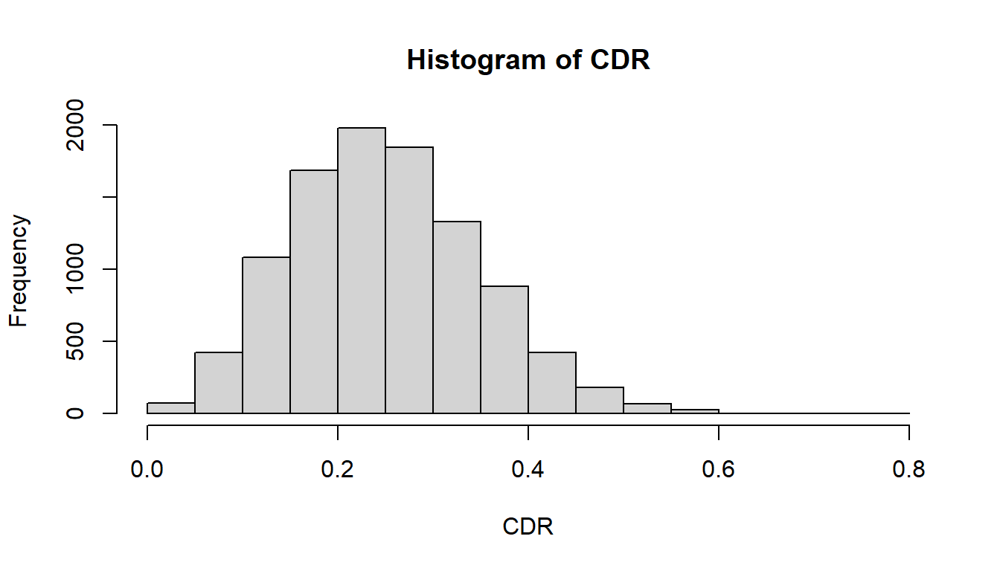

The ARPobservation package provides a set of tools for simulating data generated by different procedures for direct observation of behavior. This is accomplished in two steps. The first step is to simulate a “behavior stream” itself, which is assumed to follow some type of alternating renewal process. The second step is to apply a procedure or “filter,” which turns the simulated behavior stream into the data recorded by a given observation procedure. Each of these steps is illustrated below.
Simulating behavior streams
Behavior streams are simulated according to an equilibrium alternating renewal process, which involves the following assumptions.
Each instance of a behavior, termed an event, lasts a random amount of time, drawn from a specified distribution F_mu with mean mu.
The length of time in between instances of behavior, termed the interim time, also lasts a random amount of time, drawn from a specified distribution F_lambda with mean lambda.
All events and interim times are mutually independent.
The entire process is in equilibrium.
The function r_behavior_stream generates random behavior streams. As an initial example, suppose that both the events and the interim times are exponentially distributed, that events last on average 10 seconds, and that the average interim time is 30 seconds. Also suppose that the behavior stream is observed for 300 seconds. The following code will simulate a behavior stream with these parameters:
Code
library(ARPobservation)set.seed(8) # for reproducibilityr_behavior_stream(n =1, mu =10, lambda =30, F_event =F_exp(), F_interim =F_exp(), stream_length =300)
The function returns an object of class behavior_stream, which isn’t terribly nice to look at. The first characteristic of the object is stream_length, which just reports back how long the behavior stream is. The second characteristic is b_streams, a list containing one or more simulated behavior streams. Each behavior stream is also a list. The first element indicate the initial state of the stream, so `start_state = 0 means that the behavior was not occuring when observation began. The second element is a vector of transition times. The first entry in the vector indicates that the first event began at time 61.47; the following entry indicates that the first event ended (and the next interim time began) at time 67.46. Similarly, the second event began at time 117.53 and ended at time 120.57.
The argument n controls the number of simulated behavior streams returned:
Note that now b_streams is a list with three entries, each of which contains a start_state and a b_stream.
Most of the time, you won’t need to look at the simulated behavior streams directly. Instead, you’ll just simulate a bunch of streams and store them for later analysis. Let’s store 10 simulated behavior streams in an object called BS10:
Several different functions are available to turn the behavior_stream object into familiar types of behavioral observation data. For example, the continuous recording procedure (CDR) involves summarizing the behavior stream by the overall proportion of observation time during which events occur. This can be accomplished by feeding BS into the function continuous_duration_recording:
The function returns a vector containing one number per simulated behavior stream. As expected all of the numbers are proportions between 0 and 1.
More interesting is to simulate many more behavior streams, apply CDR, and calculate the mean and variance of the results or plot them in a histogram:
Code
BS_lots <-r_behavior_stream(n =10000, mu =10, lambda =30, F_event =F_exp(), F_interim =F_exp(), stream_length =300)CDR <-continuous_duration_recording(BS_lots)c(mean =mean(CDR), var =var(CDR))
mean var
0.250140703 0.009567949
Code
hist(CDR)

Another well-known recording procedure is partial interval recording (PIR), which involves dividing the observation session into short intervals, then scoring each interval according to whether or not the behavior occurs at any point during the interval. The function interval_recording applies partial interval recording (or the closely related procedure of whole interval recording) to a set of simulated behavior streams. Suppose that the observer uses 20 s intervals, back-to-back for 300 s, for a total of 15 intervals. This procedure can be applied to the simulated behavior streams using
Since summarize is set to false, the function returns a 15 by 10 matrix, with one column for each behavior stream. Each column contains one entry for each interval, equal to one if any behavior occured during that interval (and zero otherwise). Typically, PIR data is summarized by calculating the proportion of intervals across the entire observation session. The summary proportion can be calculated automatically by setting the option summarize = TRUE.
Sometimes, the PIR procedure is used with a short amount of time in between each interval, which allows the observer to record data or notes. Typical use might involve 15 s intervals of active observation, each followed by 5 s of rest time. This procedure can be applied using the rest_proportion option. Since 5 s is 25% of the full interval length, the rest proportion is 0.25.
The whole interval recording procedure is implemented using interval_recording with partial = FALSE. Two other observation procedures are also available: momentary time recording (a.k.a. momentary time sampling), using the function momentary_time_recording, and event counting, using event_counting. See the documentation for these functions for usage and examples.
Finally, a convenience function is available to apply multiple observation procedures to the same set of simulated behavior streams. Suppose that you want to compare the data generated by CDR with the data generated by PIR with 15 s active intervals and 5 s rest times. This can be accomplished using
This function returns a data frame with one column for each procedure and one row for each simulated behavior stream. Say that you also want to include data based on momentary time recording, with 20 s in between each moment. Just add an "M" to the list of data types to include:
---title: 'ARPobservation: Basic use'date: '2013-10-25'categories:- behavioral observation- alternating renewal process- Rstatscode-tools: true---The ARPobservation package provides a set of tools for simulating data generated by different procedures for direct observation of behavior. This is accomplished in two steps. The first step is to simulate a "behavior stream" itself, which is assumed to follow some type of alternating renewal process. The second step is to apply a procedure or "filter," which turns the simulated behavior stream into the data recorded by a given observation procedure. Each of these steps is illustrated below. ## Simulating behavior streamsBehavior streams are simulated according to an equilibrium alternating renewal process, which involves the following assumptions.1. Each instance of a behavior, termed an *event*, lasts a random amount of time, drawn from a specified distribution `F_mu` with mean `mu`. 2. The length of time in between instances of behavior, termed the *interim time*, also lasts a random amount of time, drawn from a specified distribution `F_lambda` with mean `lambda`. 3. All events and interim times are mutually independent.4. The entire process is in equilibrium.The function `r_behavior_stream` generates random behavior streams. As an initial example, suppose that both the events and the interim times are exponentially distributed, that events last on average 10 seconds, and that the average interim time is 30 seconds. Also suppose that the behavior stream is observed for 300 seconds. The following code will simulate a behavior stream with these parameters:```{r}library(ARPobservation)set.seed(8) # for reproducibilityr_behavior_stream(n =1, mu =10, lambda =30, F_event =F_exp(), F_interim =F_exp(), stream_length =300)``````{r echo = FALSE, results="hide"}set.seed(8) # for reproducibilityBS <- r_behavior_stream(n = 1, mu = 10, lambda = 30, F_event = F_exp(), F_interim = F_exp(), stream_length = 300)```The function returns an object of class `behavior_stream`, which isn't terribly nice to look at. The first characteristic of the object is `stream_length`, which just reports back how long the behavior stream is. The second characteristic is `b_streams`, a list containing one or more simulated behavior streams. Each behavior stream is also a list. The first element indicate the initial state of the stream, so ``start_state = `{r} BS$b_streams[[1]]$start_state`` means that the behavior was not occuring when observation began. The second element is a vector of transition times. The first entry in the vector indicates that the first event began at time `{r} round(BS$b_streams[[1]]$b_stream[1],2)`; the following entry indicates that the first event ended (and the next interim time began) at time `{r} round(BS$b_streams[[1]]$b_stream[2],2)`. Similarly, the second event began at time `{r} round(BS$b_streams[[1]]$b_stream[3],2)` and ended at time `{r} round(BS$b_streams[[1]]$b_stream[4],2)`.The argument `n` controls the number of simulated behavior streams returned:```{r}r_behavior_stream(n =3, mu =10, lambda =30, F_event =F_exp(), F_interim =F_exp(), stream_length =300)```Note that now `b_streams` is a list with three entries, each of which contains a `start_state` and a `b_stream`. Most of the time, you won't need to look at the simulated behavior streams directly. Instead, you'll just simulate a bunch of streams and store them for later analysis. Let's store 10 simulated behavior streams in an object called `BS10`:```{r}BS10 <-r_behavior_stream(n =10, mu =10, lambda =30, F_event =F_exp(), F_interim =F_exp(), stream_length =300)```## Applying observation proceduresSeveral different functions are available to turn the `behavior_stream` object into familiar types of behavioral observation data. For example, the **continuous recording procedure** (CDR) involves summarizing the behavior stream by the overall proportion of observation time during which events occur. This can be accomplished by feeding `BS` into the function `continuous_duration_recording`:```{r}continuous_duration_recording(BS10)```The function returns a vector containing one number per simulated behavior stream. As expected all of the numbers are proportions between 0 and 1.More interesting is to simulate many more behavior streams, apply CDR, and calculate the mean and variance of the results or plot them in a histogram:```{r}BS_lots <-r_behavior_stream(n =10000, mu =10, lambda =30, F_event =F_exp(), F_interim =F_exp(), stream_length =300)CDR <-continuous_duration_recording(BS_lots)c(mean =mean(CDR), var =var(CDR))``````{r CDR_hist, fig.width=7, fig.height=4}hist(CDR)```Another well-known recording procedure is **partial interval recording** (PIR), which involves dividing the observation session into short intervals, then scoring each interval according to whether or not the behavior occurs at any point during the interval. The function `interval_recording` applies partial interval recording (or the closely related procedure of whole interval recording) to a set of simulated behavior streams. Suppose that the observer uses 20 s intervals, back-to-back for 300 s, for a total of 15 intervals. This procedure can be applied to the simulated behavior streams using ```{r}interval_recording(BS10, interval_length =20, summarize =FALSE)```Since summarize is set to false, the function returns a 15 by 10 matrix, with one column for each behavior stream. Each column contains one entry for each interval, equal to one if any behavior occured during that interval (and zero otherwise). Typically, PIR data is summarized by calculating the proportion of intervals across the entire observation session. The summary proportion can be calculated automatically by setting the option `summarize = TRUE`. ```{r}interval_recording(BS10, interval_length =20, summarize =TRUE)colMeans(interval_recording(BS10, interval_length =20, summarize =FALSE)) # compare to summarized results```Sometimes, the PIR procedure is used with a short amount of time in between each interval, which allows the observer to record data or notes. Typical use might involve 15 s intervals of active observation, each followed by 5 s of rest time. This procedure can be applied using the `rest_proportion` option. Since 5 s is 25% of the full interval length, the rest proportion is 0.25. ```{r}interval_recording(BS10, interval_length =20, rest_length =5, summarize =TRUE)```The **whole interval recording** procedure is implemented using `interval_recording` with `partial = FALSE`. Two other observation procedures are also available: **momentary time recording** (a.k.a. momentary time sampling), using the function `momentary_time_recording`, and **event counting**, using `event_counting`. See the documentation for these functions for usage and examples. Finally, a convenience function is available to apply multiple observation procedures to the same set of simulated behavior streams. Suppose that you want to compare the data generated by CDR with the data generated by PIR with 15 s active intervals and 5 s rest times. This can be accomplished using ```{r}reported_observations(BS10, data_types =c("C", "P"), interval_length =20, rest_length =5)```This function returns a data frame with one column for each procedure and one row for each simulated behavior stream. Say that you also want to include data based on momentary time recording, with 20 s in between each moment. Just add an `"M"` to the list of data types to include:```{r}reported_observations(BS10, data_types =c("C", "M", "P"), interval_length =20, rest_length =5)```